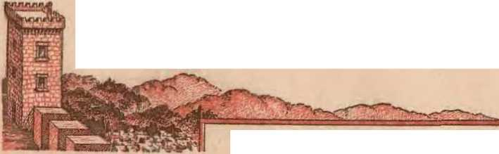
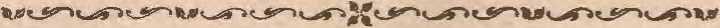
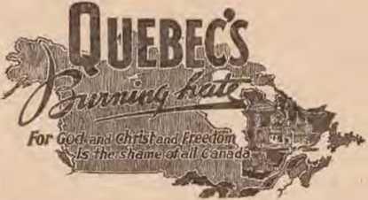

Were the accomplishments considered successful
Creations for war outdistance progress on the peace front
Comparison of principles governing eyes and cameras
Once again this Canadian province parades its hate of freedom
THE MISSION OF THIS JOURNAL
News sources that are able to keep you awake to the vital issues of our times must be unfettered by censorship and selfeh interests. "Awake!" has no fetters. It recognizes f^ter, faces facts, s free to publish facts. It is not bound by political ambitions or cpligatlons, it is unhampered by advertisers whose toes must not be trodden on; it is unprejudiced by traditional creeds. ^Its journal keeps itself ftee that it may speak freely to you. But it does not abuse its freedom. It maintains integrity to ^mth.
"Awake!" uses the regular news channels, but is not dependent on them. Its own correspondents are on all continents, in scores of nations. From the four corners of tthe earth their uncensored, on~the~scenes reports come to you through these columns. This journal's viewvoint is not narrow, but is international. It is read in many nations, in many languages, by persons of all a.ges. Through its vages many fields of knowledge pass in review—government, commerce, religion, history, geography, science, social conditions, natural wonders—why, its coverage is as broad as the earth and as high as the heavens.
"Awake I" pledges itself to righteous principles, to exposing hidden foes and subtle dan9ers, to championing freedom for all, to comforting mourners and strengthening those disheartened by the failures of a deiinquent world, reflecting sure hope for the establishment of a righteous New World.
Get acquainted with "Awake!" Keep awake by reading "Awake!"
""'^^^^--^^^^'lUI'
Pn!LISH&D SEMUIONTULY By Watchtower bible ^AND tract SOCIETY, INC.
117 Adams Street Brookl:yn 1, N. Y., U.S. A.
N. Hi Knorr, President W. E. Van Amburgb, Seoretory
Five cents a copy
Bomlttante$; rteaso remit tJy 110!1141 note or by bmI or money order or b? book
dreftWte':.' coin w airan^r! fret io th! onUioaey mans, l.here h no rt^dn:<s. Remlitanre. from country where the Society hao no 11re1'01 offices may b.l nwle to ?.th= Brooklyn omce, but only br lotorn>tlonol pPOSI$1 money order. 11-celvt or • new or renewal su^^^Uon wtll be ackstowled&ed aonlr w*bra mniJUtsted.
NOTJC& TO Stm8CmiBER5
One dollar a year
Notice of ixpiratlMi: Such notice io sent ntth the journal at least two Issues before the sub-
scnptlon expires. Please renew promptly.
Change of address: Please send any change of address direct to us rather than to the post office. Your reauest should reach us at least three weeks before the date of Issuo with which it Is to take effect. Send your old as well as the new address.
Entered as ucond-elaso matter at Brotrl1D. N. Y, Act ot March 8, 1879. I'rlnted hl U. 8. A.
CONTENTS
Twenty-one Nations Pence Conference
Treaty Drafts
Speed-up
Plans for Destruction
Rockets in Leading Role
Development of Submarines
The Profession of Creating Heroes
Disposing of Surplus Babies
Uiglt Time to Investigate
Yom Eve Is Yom' Camera
Bow Wonderful Is the Eye!
More \V onrlerful than Auy Camera!
3
4
6
8
9
10
11
12
12
14
14
15
Begettal by n Heavenly Life-Force
If a Man Will. Not Work. 1\1ust He EaU 19
The Force Behind Quebec's B^chng Hate 26
AWW/
&s' Now it is high time to awake?—Romans 13:11 V
Volume XXVJl Brooklyn, N.Y., December 8, 19'16 Number 709
BOYS sailed their miniature yachts in tary of state, would represent the United the pond that fronts the Luxembourg Staics on the general conference com-
Palace at Paris as diplomats and their staffs assembled on July 29 for the sessions of the momentous peace conference. Flags brightened the exterior of the palace, hut the interior, though ornate, was not impressive. Twenty-one nations were represented in the solemn conclave, which, in spite of its momentous responsibilities, was matter of faet and ordinary in many respects. PremierPresident Georges Bidault of France, the host nation, opened the conferenee with the unpretentious utterance, ''Gentlemen, I declare the peace conference open/' The speeeh which followed was not inspiring, and there was no applause. It set forth briefly the necessity for patiently seeking solutions to the difficulty of arriving at a conclusion of World War II. The speech was translated into Russian and English, as were the other deliberations of the conference.
While the emissaries to the conference seemed un-J:>retentious, there was, nevertheless, considerable talent represented. Each nation sent its experts to safeguard its interests. The United States limited its delegation to technically qualified personnel. Mr. Jas. F. Byrnes, the secre-
DECEEJIER 8, 1946 mittee, which was limited to one delegate from each government. But he had as assistants and advisers Senators Arthur H. Vandenburg of Michigan and Tom Connally of Texas, the latter chairman of the Senate Foreign Relations Committee. Russia was represented by the doughty V. M. Molotov, formidable champion of the Soviet cause, wlw was accompanied by able but undiplomatic Andrei Vishinsky mid other aides. Ernest Bevin represented the British people, while France was represented by Georges Bidault, already mentioned. Otlwr nations were not less ably, though perhaps somewhat less conspicuously, represented by their delegates. some of whom will come to the fore as we proceed.
The conference at the outset backed the proposal of United States delegate J. F. ByTnes that there should be complete freedom of the press to report the conference and its .deliberations and conclusions. Molotov stated that he favored free access on the part of the correspondents not only to the plenary sessions but also to , the meetings of the various committees and commissions, dealing with details.
3
Treaty Drafts
T1ie conference was early supplied with treaty drafts proposed by the Cm.m-cil of Eormgn Ministers composed of the Big Four, Russia, United States, Great Britain and France. There were five or Ihef'e drafts, setting forth terms of peace for Ita!v, Bnlgariu, H nngary, Rumania and Finland. 'l'lw drafts revealed that the Big Fotr Imd come to some agreement or compromise on quite a muHher of problems, Ruch as demilitarization of tlf' named enemy nations, houndary revisions and reparations; but tJiere were also points that were left un-:finished.
TLe so-called ••smaller" nations represented at the conference, however, were iiol disposed to act. merely as a ruhher stamp l'or the Big Four decisions. Tins determination was put into words by Dr. Herbert V. Evatt, Australia's minister for external affairs. He started out to <‘ritieize the draft treaties^ severely, snying that they assured a privileged position for Russia in tLe economic affairs of thr five minor Axis powers. He set out fom fuclamenta! principles which he emphasized as being essential for just peacemaking, demanding (1) adherence to the Atlantic and United Nations Charters (which many of the smaller nntions felt were heing ignored) 5 (2) impartial examination by the conference of all facts bearing on the treaties; (3) avoidance of unjustifiable burdens on the losers in tile wnr, to foster democracy; and ( 4} the effort to attain a Just nnd diii’ahle peace.
Dr. Evatt was not the only one who was dissntisfied with the efforts of the Big' Four to draft peace treaties for the :five recent enemy powers. These five powers thE’mseJves were keenly disappointed in them.
General Dismay
Italy was dismayed in the decisions set forth in the treaty it was expected to sign even tually, although subject to review by the conference. The Italian delegates said they saw no indication in the treaty draft of any recognition on the part of the Big Four that the Italians had fought on the side of the Allies for two years before final victory. They said that other enemy states which had done much less than the Italiais had hecn favoi’pd by a powerful friend (Rust-ia). TLe Italians were particularly bitter ahont the proposed internationalization of the port of Trieste, which had been held by Italy since the conclusion of the first 1VorJ<1 1Yar. Yugoslavia, wliicli had been on the side of the Allies, was also bitter about the Trieste proposal. They wanted the city and surrounding territory for thcmRelves.
Bulgaria's representatives were said to he "stupified" with the terms of the treaty drawn np for them. They said, "We f-UTj-jiol understand why we are treated bio- a beaten enemy when we never once took up arms against any of the Allies." However, Bulgaria was rather closely linked with the Nazis and very belatedly declared war on Germany on September 7, 19H. The Bnlgars protested against being cut off from the Aegean sen. The Bulgar-Greek frontier , however, hnd been left unsettled by thee Big Four, although hope for a piece of the coastline was slim.
Hungary felt it had considerable cause for uidiuppiu^-s in the provisions of the treaty made on its behaJf. Among other things, its military setup had to be drastically reduced to an m ipotent minimum. Then it must pay out $300,000,000 in reparations, aud must cede to Rumania ids territory of Transylvania.
Rumania, while it would gain Tran-sylvama, must give up to Russia the equally extensive territorv of Bessnra-bia, together with North Bukovina, both of which territories Russia liad already taken over. The arrangement gives Russia a direct mterest m the Danube river , as the Bessarahian territory borders on
that important artery of trade at its very mouth. Rumania must, further, give up to Bulgaria that piece of territory known as Southern Dobruja.
Finland, too, would lose something as a result of its association with Nazidom. A greatly minimized military setup was a feature of the Finnish treaty (as, indeed, of every one of the five) and the Russians were to get the territory of Petsamo at the extreme north of Finland, which would close to Finland her only arctic port. Russia also gained the riglit to construct on the Finnish island of Porkkala-Udd a naval base, on a fiftyyear lE>ase. E'inland must, moreover, pay reparations to Russia in the amount of $300,000,000, a crushing burden for the small country.
Such, very briefiy stated, were some of the terms which the Big Four had proposed for the defeated nations. The treaties, admittedly incomplete, were now to be eonsidered by the plenary conference of the twenty-one victorious powers, great and small, for recommendations, additions and changes.
The pe-ace conference was heavily policed. Detectives and uniformed police were everywhere in evidence. They were also on duty in hotels occupied l>y the delegates. Nothing untoward must happen to thesu important personages, for such a mishap would only complicate the already tense situation.
The pace of the conference was slow. There was much speech-making, which tended to become wearisome mid boring, but was considered necessary to let the various delegations make their attitudes known. At the rules committee, an important part of the conference, it took more than two hours to elect a chairman. This committee also bad to decide how many votes would be required to adopt a Tecommendation with reference to the draft tTeaties. It was bere that Secretary Byrnes of the United States made DECEMBER 8, 1946 known his decision that a two-thirds vote would constitute a reeommundation which the Big l""our, and more particularly the United States representative, would consider woi’thy of serious consideration, wben they met for final decision of the treaties. A British compromise, however, was finally accepted by the rules committee, that a two-thirds vote be considered a recommendation, while a simple majority vote would have less weight and be viewed in the light of a suggestion.
The treaties were now before the conference to be taken up one liy one, first by the various conunh;sions, tlien by the conference in plenary session, for lengtby consideration. Some of the features of the treaties, Yery important, were, nevertheless, 1mt compromises between the members of the Big Four and ' were, therefore, presumably open for revision and alteration. Some points were entirely unsettled, and in these instances the reconunendations of the conference would Jiave greater weight.
As the days passed the initial hopefulness of the conferees, not too strong to begin with, waned. It was evident that there was no over-all aim to work together for peaee. Rather, the majority realized, the greater nations were cari'Y-ing on-a contest for power in which the smaller powers, and particularly the former enemy nations, were the pawns. It was a continuation of the struggle which antedated the war itself. The chief contestants were apparently the United States and Soviet Russia, with Britain discreetly in the hackground yet vitally concerned in the maneuvers. At one point Mr. Molotov of the Sovjet. made a charge that certain nations had enriched themselves through the war. Mr. Byrnes, sensing that the United States was cliief-Jy in the mind of MolotoY, took oceasion to refute the charge, saying that over $11,000,000,000 had gone to Russia under the ]cnd-lease program, and that America's expenditures during the war aggre-
gated $400,000,000,000-—money borrowed and which the people must repay. Byrnes contended that this tremendous debt did not indicate national enrichment.
.Among the interchanges, which became rather frequent as concerned the United States and the Soviet, Mr. Byrnes took occasion to say, ‘‘We will not permit admiration and. respect [for the Russian }ieoj)le] to he lessened by Mr. Molotov. We want to work with all nations. We are no!. going to gang up against any nation. But we do not intend to make all the concessions. We have not fought for a free world in order to dictate terms o£ peace to om allies or to let them dictate tenns of pence to ns."
Mr. Molotov was prompt to reply in a speech of his ovn, saying. “Mr. Byrnes has spoken in a violent and perhaps bellicose manner. There is no question of dictating decisions to the conference. Certainly it would he easier to dictate decisions, but we are doing everything to convince the conference of the justice of our opinion."
Some of the more s.tai-tling and revolutionary proposals made at the conference came from the Australian delegations. Mention ltas been made of the proposal by Dr. Evatt setting forth fom fundamental considerations in the peacemaking. But the Australians were not content to set forth mere generalities. Tliev submitted an amendment with respect to reparations which aroused the ire of the Soviet representative. Dr. Walker, speaking foT Australia, proposed that an am(‘jidment with respect to reparations be passed to ( 1) create a seven-member .reparations commission; (2) determine how much a country could pay without going bankrupt; and (3) provide for bilateral reparations agreements.
As the Big Four had in the Foreign Ministers Council spent much time on the subject of reparations, these suggestions were not at all welcomed by Mr. Molotov, especially in view of the fact that the Soviet was the beneficiary in most of the reparations provisions.
Another striking proposal by Australia was the formation of a comt o£ human rights which would enforce the treaties as far as individual freedoms (made a part of each treaty) were concerned. If each country can determine for itself to what extent it will see that such freedoms are observed, then, obviously, tJie clauses which guarantee such freedoms in the treaties are likely to be ineffective in practice. Both of these proposals were, however, set aside.
Speed-up
As the conference entered its fifth week, it was realized i;hat something must be done to <p< ed matters along, and the British urged that the deputies of the Big Four meet to try to accelerate ‘ the slow pace of the deliberations. But it was some time before the get-together actually tool< place.
Some of the delays of the conference were due to misunderstandings of an apparently trifling nature. On one occasion a translator rendei'ed the word "attend'’ as <'purticipatp", and the Question of the actual status of the delegation referred to was discussed for two hours before the snarl was finally untangled. A good deal of heat was in evidence during the discussions of this trilling difficulty.
On another occasion the chairman of a meeting walked out in a huff, ignoring all the rules, and shouting, ar will not recognize any delegate—the meeting is adjourned." Some of the members of the committee meeting were greatly incensed by his actiom while the .American representatives laughed and suggested the chairman read the rules before the next meetbig. .
In the midst of all the problems that faced the conference, matters were further complicated for the American delegation by a speech made by the then United States secretary of commerce, Henry A. Wallace, to an anti-Republican rally in Madison Square Garden, New York. The speech had wide repercussions, and was seen to be a direct challenge to the policy which was being pursued by Secretary of State Byrnes at Paris. The ultimate solution of this world-shaking incident was found ii the requested resignation of Secretary Wallace and a statement by President Truman that the administration unqualifiedly supported the secretary of state at Paris.
"Mention may be made in passing of the visit at about this t’me of James A. Farley, former chairman of the Democratic National Conunittee, to the pope. He praised the stand taJ\en by Byrnes but would not say that the pope had urged him to do so. Farley also visited Alcide de Gasperii liead of Italy’s “Christian Democratic" ( Catholie) party.
On September 24 the Council of Foreign Ministers (the Big Four) finally met and agreed to recommend to the conference measures that would speed up the delfbei'ations. It was urged that the commissions finish their work by October 5, thus giving the full conference au opportunity to review then^ recommendations during the following week, and allowing the entire conference to finish its work by October 15. In order to accomplish this aim speeches were to be limited as to both number and length. The dosing date of October 15 was set in view of the forthcoming United Nations Assembly in New York October 23, which would be attended by many of the diplomats present at Paris.
The commissions now got down to business in real earnest and by dint of evening work added to their daylight Rchedules finished theh’ work iji the appointed time. During these various commission sessions a total of $1,335,000,000 in reparations was approved to be assessed against the five defeated powers. Other matters, too, were put in shape for final review.
On October 15 the plenary sessions wound up their delilJerations by voting one by one on the 223 articles and 33 annexes in the treaties with Italyt Finland, Rumania, Hungary and Bulgaria. All of the five treaty drafts liad recommendations and suggestions added, and were now ready to be presented to the Big Four for 11nal consideration and action at their proposed meeting in New York, November 4. Further, tlris council will have to solve problems which the conference failed to solve, inulnding the Greek-Bulgarian frontier; the Trieste arrangement, its administration and its boundaries; the freedom of the Danube, and other questions, all of a vexations nature.
Molotov did not add to the already limited happiness of the conferees when he stated that the work of the conference was unsatisfactory. And thiR after eleven weel\s of <liflcussion and stormy debate. But these eleven weeks were themselveR but a part of more than a year of deliberations, conferences and discussions, all of them still leaving the main problems nntouebpd—-those concerning the chief aggressors, Germany and Japan.
The feeling of niany is expressed in the columns of the Camden, N.J., Evening O'ourier, when it ohserved in the course of the conference a conclusion that could not have been changed at its end: “We are convinced that the only hope for peace lies in realizing that we do not have peace, tliat this is another war of nerves . . . We know all this in our hearts. Let's face it in our minds. We dare not cry 'peace, pP.ace, when there is no pence'.''
One more thing will have to be realized by those seeking peace, and that is that only Christ Jesus the Prince of Peace and Jehovah God's Theocratic Government of Righteousness can bring peace to obedient persons of good-wilL That this will he done at the time appointed is the reliable promise of God's nnfailjng Word..
DECEMBER 8, 191,6
IT IS eause for general concern tliat behind the glohe-revei'herating discord at the peace parleys, and the ominous events in the Mediterranean trouble spots, another rivalry between East aiiCi '\Yest is observed. The armament race is on! Already rocket and jet propulsion and the Rujwr rocket, with atomic warhead, are casting tlieir shadows of doom across the inturc.
Some authorities estimate that Russia is producing more war equipment and arms than ever before, whiJe her experiments with Uw rocket have been observed as far as nine hundred mile8 from the launching bases ill Germany—in northern Sweden and in Lisbon. It may surprise some that both Russia and the United States have the most skilled German scientists, wlw already had transatlantic' rockets on the drafting boards, now hnsy on improvements of destructive apparatus.
•While details are lacldng about developments behind tJH.1 inm curtain, considerable information has been released concerning- American progress. At White Sands, Kew Mexico, the United States is busy perfecting the space-conquering ultrasonic V-2 rocket; while elsewhere slw il' engaged in manufacturing faster submarines with target-finding torpedoes; battleships to resist atomic bombs anrl themselves discharge rocket missiles; new planes to attain a speed of 1,5110 mph.; while one AAF official contemplates a rocket conquest of the moon.
A general rule of warfare is that offense weapons spawn hetter defense weapons. But in the present held day for arms production, the killing devices have far and away outstripped any and all possible defenses lmown to man. And of all these the big rocket with atomic warhead (the warhead is the nose containing the detonator and charge) is the most staggering to contemplate. The known history of the V-2, fourteen-ton, 46-foot '•Big Ben" rocket, projected by burning alcohol and liquid oxygen, is noteworthy because of destructive efficiency already accomplished. A number of V-2 rockets were fired on London at iJie time of tlw mass bombing with the V-1 or buzz bomb, and while the British were able to conibat the latter with radar location, and blanket fire, tJie V-2 was never heard, seen, nor stopped !
It is no wonder that authorities declare the BritiR]j Isles entirely indefensible agaijjst this monster, when the following description is contemplated (Life, September 2, 19-1:6, page lOG) : •'Loaded with 71500 pounds of alcohol fuel and 11,000 pounds of liquid oxygen the V-2 of •world •War Tl rose 60 miles in the air and arced 200 miles in five minutes to deposit one ton of TNT in Loudon/' '"There i8 no known defense against the atomic rocket attacking at mile-per-seeond speed/' Further discussing the future o.f catastrophic doom, Science Illustrated (August), under the heading '•Man vs. Atom", declares tliat this devastating missile is the "cheapest death” beenuse it can be used to destroy each sqnnte mile of enemy territory for less than halt a million dollars. The horrifying truth is that “in five to ten years any major industrial nation can make enough atom bombs to destroy al the major cities of any other country over nig-ht".
In 1.9945 the American anny captured 25 of these massive projectiles. Before tlieir capture, an officer told of his observation of devastation by the V-2 during the rocket shelling of Antwerp in the fall of 1944. The Nazis were onlv ahout fifteen miles outside the city they had just evacuated. Intimation of the use of a new weapon came to 1United States observers wben terriiic explosions threw whole city blocks skyward, no plane being heard or seen. Plainly this was something different from the buzz homb, which could be seen and heard.
According to the eyewitness in the city, he had for some time watched a faithfully regular flower woman offer posies, sometimes a hit frayed but in good weather or had, in a certain unnamed street in Antwerp. Death nm::;t Imve come without a premonition. Where once had been activity, buildings upon a busy thoroughfare, and a pitiful oJd flower vendor, was in the second's fraction converted into a goping crater, from which not even a fragment of her black shawl or faded petals was discovered. Some had raised their eves after the ex-plmsion s and seen thin streaks in the stratosphere arcing down to the yawning tole that made a grave for so inany. The semicircular smoke trail momentarily ma rlHKl the missiles' trajectory. Al readv tlw war was casting its shadow not "by the rocket’s red glare'" hut beneath rocket streaks of vapor thai traced a patli to the chasm of death! Killer V-2 was striking hard.
American experimentation with the rockets captured disclosed tliat the Germans had already accomplished much : a novel lifting device for setting it on end DECEMBER 8, 1046
for firing: fiber-glass insulation to protect against the terrific Iwat generntecl by the descent at 3,800 miles per hour ( Difp gives tlw maximum speed at about .83 miles ppr second; page lUj Rt-ptem-her 2, 19-:J.G); a synchronized tele!'<'ope and motion-picture camera to I'f'c'ord its ilight for 150 miles , Aan jradar records its speed and lligJtf. np into the terrible cold 70 miles ahoYe the earth's surface: while gujilhig devices have en-ahled them to drop the projectile regularly into a four-mile circle 600 mile:: distant. Record height for \T-2 rockets is 104 miles.
Rockets in Leading Role
This is not all of the experiments with rocket propnh;ion. Plans are made lo replace some of the heavy guns dii cruisers wit]! pit:.; for rocket launching; while its use for propulsion for planes, ships and even suhmarine::-: is contemplated. Thus marine speeds of GO to 75 knots arc foreReen. A roeket-equippNl tank for jumping ditches aud rivers, tlmt:' saving precious (•omhat time, i::; being experimented with. The ntlYY also amjotnees: ''It is conccivnble also that the doughboy of the future may be equipped williii an individual rocket to help him scale wallfi and other obstacles."
Introducing- not only rocket propulsion to planes, tiiC' navy’s new A. D-1 Skyraid-t er, built liy Dongla::;, carries 1wo 1 2-inch "Tinv 'rim" rockets aml a h;04m v of twelve !j-in<>h rocketis, all neatly milled under its wings as a lwn mothers its chicks. Then there is thf' radar-guided, glider homh called thes "Dnt" that wn.s released from a naval plan<' during training excrcil)es at the Naval Aviation Ordnance To!;t Station, Ch inrotf'ague. Vu. Approximately twelve feet in length anJ with a ten-foot wing spnn. the rnissile bas a range of more than lf:'n miles aiid is capable of carrying a l.llOO-pormd bomb load.
On the Mojave desert another navy testing center experiments with firing ranges, pilotless planes (target “drones" gas-driven and j’adio-controJled from the ground), and more rockets. One of these rocket experiments resembles the chassis of a handcar clamped to the rails and having three two-foot rockets ‘trig-geTed" for progressive firing. When the first rocket is fu:ed the car is catapulted at terrific speed and at the firing of the third rocket the strange vehicle becomes a blurred streak attaining the fastest speed known on a horizontal rail upward of 1200 mph. At the take-off end the track is slanted upward and directed at the firing point, a mountain about six miles distant. Without explosive charges these vehicles are said to make "cheese holes" in concrete emplacements on the mountain. ( Science Illustrated, September, page 85) Hockets with atomic power have dated all equipment and defenses of World War II.
Just how difficult rockets and the newly developed faster planes will be to cope with is best understood by comparison of their speeds with that of sound. At 32 degrees Fall renheit sound travels in dry air about 1,087 feet per second., although its speed is 4,708 feet in water at 8 degrees Centigrade (46.2° F.). This is about 740 miles per hour. Tlte V-2 reaches a descent speeU of about five times the speed of sound! This ultrasonic speed makes the "problem of radair traoldng and interception as agonizingly difficult as coping with the atomic explosion itself". '
Passing the threshold of the speed of sound also is the new XS-1, a rocket-driven airplane designed to travel 1,700 mph. at an altitude of 75,000 feet. Already the B-3G bombers that directed B-17 drones that flew devoid of crews from Hawaii to the West coaRt are old style. Recently also the army ]s setting new records in the :sjze of planes. Up to the close of the summer of 194G the largest bomber built was the Consolidated Vultee Super Bomber XB-36. This sky giant had a wing spread of 230 feet, a fuselage 163 feet long, and is propelled by six 3,000-horsepower engines. An mmsnal device, the circulation of air through the hollow steel blades prevents ice from forming which had frequently impeded progress in subzero temperahires. aJso recently built is the Howard Hughes Hercules with plywood hull of 214 feet, a cruising speed of 175 mph.. and, while designed to carry war cargo, it could accommodate 700 passengers.
Development of Submarines
Meanwhile the navy is not at all satis-ned witli their submarines. Success against. the Japanes . and German shipping was due, so they aver, to mass production and numbers rather than quality of submarines. In quality botli these Axis powers siupassed the United States. Before the war's end the Germans had developed n true ••submersible" that by menns of a breathing tuhe (“sclnorcheP') could cruise across the Atlantic at periscope depth. Two of the handicaps were largely overcome by the U-boat type 26, which fortunately was never pToduced by the Nazis. With a submerged displacement of less than 2,000 tons it had a submerged speed of 24 knots (slightly less thnn 28 rniles pet’ hour), faster than any convoy. Further, it was practically invisible because of anti-radar paint on the breathing tube and the periscope.
Besides torpedo-carrying submarines the Germans and the Japanese developed other types of underwater craft. The Nazis designed a submarine to rai’i’y 400 tons of rubber in underwater Ijilges, and underwater oil tankers. While the Japanese, in addition to building tbl'ee of the largest underwater craft ever launched, built •'mother" submarines for launching midget submarines; cargo carriers •and submarine troopsJiips capable of landing 120 men. Their giant of the seas, the 1-400, largest ''tin fish" ever launched, had a surface displacement of 4,663 tons, uml carried three bombing planes ead of which in turn carried 1,600 pounds of
destruction. This monster was designed to homb the Pana:mn Canal and American cities.
Just how much farther the submarine may be developed in speed, depth of submergence, and striking power by adaptation of nuclear energy, rocket or jet propulsion can he vei*7 dimly dis cerned. Besides atomic bombs the submarine of the futme may also be used to spread bacteriological warfare. It ap-peaTs as another weapon for destruction.
A United Press dispatch published in the New York Times of November 8, 1946, told of plans for electric torpedoes that can be fired from 1,000 feet beneath the sea and find tlieir targets through automatic homing devices. Westinghouse Electric is making contract with naval ordnance for work on the missiles.
.As fahnlous as are the present accomplishments or man, his dreams of space conquest are even more so. According to the New York World-Telegram, July 30, 1946, the Army Air Force missile expert said ''they expected to shoot a rocket to the moon within 18 months''. According to Collier's, September 7, 1946, author G. Edward Pendray describes some of the difficulties which must he overcome: perfecting a rocket with ''liberation'' speed of 7 miles per second required to leave the planet earth; creation of moon suits with their own atmosphere, moisture, pressure and temperature equalizers (the moon has neither water nor atmosphere, and temperatme changes span about 500 degrees F., boiling to super-subzero). Such equipment, though weighing 700 pounds on earth, would weigh only 140 pounds on the moon, due to the lesser gravitational pull of the moon. The writer conceives that the moon would finally be colonized, and forti1ie<l for defense against marauders from Mars. Man is again invading the realm, of the supremacy reserved for Jehovah when he irnagirws: •'So far as sovereign power is concerned, therefore, control of the moon in the interplanetary world of the atomic future coulU mean military control of our whole portion of the solar system/' Man will not reach this fahulous achievement. Even while one branch contemplates space conquest, another branch of the army estimates that man cannot live iji the ajr at speeds mueJi greater than 750 miles per hour.
It must be evident that man should turn his eyes away from future ways to kill and to commit suicide more effectively. and give attention to .Jehovah's announcement that the peace-lovers of this generation may live forever, if they follow divine directions . “T have set before thee life and death) the blessing and the curse: therefore choose life, that thou mayest live, thou and thy seed; to love Jehovah thy Godi to obey his voice, and to cleave unto him; for that is thy life, and the length of thy days/'—Deuteronomy 30: 19, 20, Am. Stan. Ver., margin.
■«.
The Profession of Creating Heroes^
Cf. Selfish propnganda preys on a gullible publin ns never before. Recently newspaper reports have leaked out the information that Captain Colin P. Kelly's body hus been "positively identified" io the Philippines. He wns shot down by Japanese planes us he returned from the nttaek 011 the battleship Hortma. Instead of being sunk by the publicized sniiciclrl dive of Captain Kelly and his plane, the Haruna three yent'H later was discovered still afloat. A vetl:'run uewspa perm an who was in uniform during the war slated: “As Senator Elhert D. Thorn'asj Utah Democrat who heads the Military Affairs Committee, recently said^ the Army Air Forc!ti hi’ed a host of profeseional publicity wen nnd ndvertsing men, ond set them to grinding out news stories glorifying the 'bras.s hats' and covering up their mistakes . • • Other branches of the armed forces did the same thiug . . . It all became 11 world-wide, back scratching game, with everyone co-operating to glorify and cover up."
DECEMBER 8, 191,6 11
_.. CHILDREN are a hlessed her-■'ta itage more precious than costly jewels and more desirabk1 than gold. That be.ng so, Is it not strange to hear in this day of shortages that there is a surplus of habies, the disposal of which creates a great social problem! Stranger than this is the exh;tence of a "blac<k market" in babies, which seems to he out of reach of the law. To nntlcrstnnd how this "black market” operates at a time when Hiere is a surplus, is to have a fair understanding of the whole social problem of child adoption.
A young girl that has ''gone wrong" finds herself with child. She becomes desperate. Leaving home she goes to a strange city, finds a physician to whom she tells her story, and begs him to help her ont. If he is one of the '‘baby brokers’’ he will "arrange everything": the prenatal care, the hospital, the delivery. He will even take care of her until she is hark 011 her feet again and able to return home.
And what iR his fee t All he aslcs is that the girl sign an agreement to give up her hahy when it is delivered. Wanting to keep the whole matter a secret she cannot take it with her, so ::;he gladly signs. The doctor then consults a waiting lh;t of well-to-do clients, who, for one reason or another, wnnt to adopt a baby. A deal 1s made and the hahy is sold for $1,000!
The estimate iR that in 1938 there were 16,000 adoptions made. How mnnv were obtained from the babv •bootleggers" is not known, since there are other sources that have a surplus of babies. The various states have what are known as child adoption agencies; as, for example, the Child Placing nnd Adoption Conunittee, Spence-Chapin Adoption Service, Placing Out Department of the Foundling Hospital, Catholic Home Bureau, or the Free Synagogue Child Adoption Committee. Though some of these agencif's nre financed by private interests and oi’gnnizatitms, they are approved and unde r the supervision of tlle st.:'lte.
The history of child adoption upon which these agencies are founded goes back nearly a hundred years to the time of C. L. Bract-, who the New
York Children's Aid ::-;ocieh in 1853. Instead of placing homeless and needv children in orphanages Braee placed them in private homes. That raised a dispute as to whether tlte private home with ltti irregular form of parental care was better than the regimented, heartless and machine-like life of au institution. Not until the turning of the century • was the question finally settled in favor of the private home.
In 1899 President Theodore Roosevelt called a meetijig of 200 delegatrR from everv state in the Union to discuss the problem. The platform they unanimously adopted said, in part:
The carefully selected foster home is for the normal child the best substitute for the natural home. Such homes should U(' selected by a most carciul process of iuvestigation, carried on by Sklled agents through personal investigation, and with Uue regard to the religious faith of the child. After children are placed in homes, adequate visitation. with careful consideration of the physical, mental, moral, and spiritual training and development of eaCh child on the part of the responsible home-finding agency, is essential.
Since tlwn adoption agencies have followed these principles more or less. But are they right 1 If so, theu, why have they not prevented the racketeers from robbing the cradles !
High Time to Investigate
Several committees have studied the adoption problem, one of the newest of which is sponsored by tlie United Hos-pi tal Fund, the Welfare Council and the New York Academy of Medicine. But, so far, these social workers that have set out to solve this "great human problem'' have come up with the wrong answers. One of these is a sort of "adopt-a-child" campaign in which the adoption agencies are advertised in an effort to make them popular to both unwed mothers and the adopting public. The idea is that this will bring the surplus baby supply into the hands of welfare agencies for distribution instead of letting the "black market" handle it. The public, they think, should buy their liabies as well as their meat from a licensed dealer.
Some think the shortcomings of the adoption agencies are the cause for existing conditions. The charge is that the agencies are understaffed because of insufficient funds. Others advocate stricter state lawsi forbidding the adoption of children except through approved agencies. Increase our funds, give us more help, and elamp down on all other ave-nnes of adoption, and then we can put a stop to the baby racket, say the welfare committees.
But right here is where social workers miss the whole point. One o£ the reasons why the “black market” is patronized is so tlutt existing regulations and restrictions may be by-pa::;sed and avoided. People are willing to pay extra in order to cut short the "red tape'' Of investigation into their private lives. The wife of a soldier overseas who becomes unfaithful and reckless is found with child. Fearing publicity that might be incurred through the welfare channels she seel\s another way of clisposing of her "harvest of wild oats". Consequently increased legal restriction is not the remedy, for there is a general social hi'eakdown in law and order.
Instead of striking at the underlying causes for this adoption problem many sincere social workers race around talking about new vices that sprout up here and there. Wliy not strike at the roots of social delinquency from which these unwanted babies springl There is a general abandonment of all social. moral anU ethical standards by the i'3 modern "'fTee love" world (more appropriately, free lust), which sells its "love babies" for a thousand dollars a head, many of whom (poor things) are infected and cursed from their conception with the bligltt of venereal disease. And yet, for shame! these "investignting" connnittees n1l't>r no criticism of Hiwh wicked practices. If they realJy want to put an end to the adoptiou “black market'' let them cut off the racketeers' supply of babies. Let them strike at the whoredom in the land !
Notwithstanding her feeble efforts to care for the abandoned babies and fn-tiierless children Christendom stands condemned before the judgment throne of God. By the mouth of llis prophet Jeremiah, Jehovali says: “ For among my people are found wicked men • • • they judge not the canse, the cause of the fatherless, yet they prosper; and the right of the needy d(i they noi judge. Shall I not visit for the:-;e things! sait.h the Lord: shall not my smil be avenged on such a nation a:-; thisf' (5: 26-29) Yes indeed, and shortly now, at the battle of Armageddon. At that time God will destroy Christendom and all of hej‘ abominations, for she cannot be n:fonned.
So rejoice in tlUs knowledge, you ppo-ple who sorrow over the orphan's plight today. In the righteous New World that will replace the::; present wicked one, children will be the blessed charges of those who beget them. No more will orphans and little ones be east out, nor will they be boug'ht and sold over the counter, nor will the sacred fruit of the womb be treated like a stray cat or dog. Men and women will rejoice in their children, concerning whom it will be sajd: "As arrows are iu the hand of a mighty man; so are ch:ildren of the youth. Happy i::; the man that hath ltis quiver full of them."—Psalm 127: 4i 5.
1'1' WOULD be difficult to measure the satisfaction and pleasure tliat people receive from the many accomplishments of modern cameras. Their delight is due, in a large measure, to the great improvements that have been made in Ijotlt black-and-white and n color photography. These advancements have also made people more critical of both their owr1 and other people's photographs, and many, as a consequence, have the desire to own a better camera. By a better camera they mean one with better lens and shutter; one that will capture and record a picture with greater fidelity and accuracy.
But how many of such photography enthusiasts appreciate that they already possess a far better camera than money can buy? Their eyes are in reality cameras, but because they are of such a high ordeT people seldom consider the great similarity between the two. A little comparison, therefore, between the camera and the eye wil prove enlightening and profitable to both the photographer and the layman.
Practically all cameras, whether they are midget bantams, folding or box types or whether they are ;umbo press cameras, have four principal features in common : the lens, the shutter, the dia" phragm, and the film. Of the four the lens is generally considered the most im-pmrtant single feature of a camera.
The simplest and cheapest lens is only a single piece of glass convexed on both sides. Lenses that correct distortion, astigmatism, and color are made of four to seven individual elements that are cemented and mounted together in a single unit. Those of great precision are very costly.
The shwtte-r of a camera is usually composed of overlapping leafiike plntes that are operated by springs or gears ui such a way that they momentarily open and close. Common shutter speeds for
the better class of cameras range from one second to one five-hundredth of a second, though speeds of one-thousandth of a second are not uncommon for focal-plane shutters. The ordinary "snapshot" is about one twenty-flfth of a second.
TJie diaphragm is made up of fan-like plates so arranged that they can be Bpread out to form an opening or aperture in the center through which the amount of light entering tlte camera can be controlled. This permits the taking of pictures under a wide variety of light conditions. Uore experienced photographers also nse the diaphragm as a control for what is calletl the "depth of fomu:." in the picture, sinee the smaUer the diaphragm opening the greater the' depth of foeus. Tho majority of cameras have the shutter and diaphragm mounted between the front and back elements of the lens.
One can have the best lens in the world, the finest shutter with a precision-made diaphragm, but if there is no film or sensitized material in the camera one might as well try to take pictures with.li a bow and arrow. The filin then is the central feature of tie camera around which the other parts are built for the purpose of recording a light image. The fihn is more fragile and delicate than the expensive lens.
More delicate and far more miraculous than any camera is the human eye. Essentially it has the same four parts that a camera has, but of a much higher order, with greater sensitivity, versatility and utility than possessed by any camera yet devised by man. A comparison between the two will quickly disclose the udvantages and superiority of the eye over the camera.
The eyelid that covers over the eye "camera" serves both as the carrying case and as the shutter. Its "shutterspeed" is ahvnt one-fifth of a second. The white or opaque part of the eye is oalled thu sclera by medical men, and covers over about five-sLxths of the spheroidal globe, aml acts like the box or heUows of a camera, keeping out all light except that which enters through the lens. The clear, horny part in the front of the eye that malms up the remaining :;ixth of the area is calied the cornea. It refracts or bends the light rays ro tliat they pass through the lens.
The diaphragm, or, as it is called, the is found in front of the lens. iVlieu one says that a person has blue, brown or gray eyes one is referring to the color of the iri:;;. Like the diaphragm in the camera the iris expands or contracts to regulate the amount of light that enters the eye through the hole or aperture in the middle called the p’upil. Similar to the entrance of a cave tlte pupil appears to be a black spot in the center of the eye because the interior of the eye is black, like the cave. The expausion and contract tion of the irh; may be observed by looking at the size of a person's pupil in the daytime and again at night.
Behind the iris is the lens. It is a crystalline substance, transparent, like gltss, and double-convex in shape, that focuses the light rays ou the back part of the eye in tile position corresponding to that occupied by tlte film in a camera. This “"screen" upon which the image is formed is called the reti’na, nnd, ns in the case of the film in the camera, it is the most sensitive as well as the most important part of the eye. The retina is a soft membrnne having in it an infinite number of rods or cones that receive the light energy and transform it into nerve stimulus that is relayed to the hrain.
More Wonderful than Any Camera!
When it comes to versatility and speed and simplicity of operation no manmade camera will compare -with the eye. The eye, mounted in a Iwad that ean be turned in any dh^ection by the universal joints of its neck, plus the fact that it can be quickly rolJed in it::; ::;ocket by its six controlling muscles, makes the eye better tltan any camera mounted on a tripod head.
The eye has its own built-in light exposure meter that automatically adjusts its ctiapluagin, the iris. The eye will also record picturfls over a greater range of light levels, and with much greater speed. Rush from the bright outdoors into a dark hallway and in less time than you conld load a camera with film your eyes win be taking pictures llnder conditions that would require time-exposures with a camera even It it was equipped with a high-speed film ancl supei:fast lens.
The ingenious method used to focus the image on the retina surpasses any automatic synchronized range-finder that science can devi.Rc. Fix yom- eye on an object fifty feet away a::; you walk toward it. The lenses n your eyes will start bulging out, giving them a greater curve as you approach it. Yet, so smooth is the constant change in focm; in your eyes that yon are entirely unconscious of it. Moreover, the eye gives your brain pictures in three dimensions.
Wljo will compare the marvels of modern color photog.raphy with the normal human eye nnd say that it is equal or superior? No one with knowledge and understanding. At the best, color photography is such a poor imitation of the real thing that the eye can telJ the difference at a glance.
Compared with the eye the camera is a newcomer to the Held of photography. One of the latest developments is a huge hundred-pound telephoto lens liuilt for aerial photography. Its principal Jea-ture is a built-in heating device with thermostatic controls for bjgJi-altitnde flying. But the human eye had it first— its own built-in self-controlled heating system. Likewise the eye was first to have vel)ow filters to cut down on the ultraviolet rays. This yellow coloring matter is found in the eye's lens.
And let us not overlook the "darl{-room'” where the "'film" from the eve is processed, that is, the brain. On October 15, 1946, it was demonstrated that a motion picture eonld be taken, developed, and flashed on a screen, all in 15 seconds. But still there is us much difference between this speed and that of the eye as there is between the speed of the pony express and a P-80 jet plane. Tile eye can take a picture, rush it to the brain, and have it ((developed" and hn-printed hi less than a second. And what about the mind's '•negative 'file'' 1 Deep in its reeesses it has cno rmons files, yet they are not bulky or clumsy. Instantly an image that has been recorded for many years ean be flashed on the mind's screen with the same heantv and brilliance as ‘vlten first inade. bnlv tJiese wonders of the cerebral vaults surpass the marvels of the eye.
In spite of all the defects necessitating the wearing of corrective glasses, the average eye today is still more marvelous than man-made cameras. It is true, great advances will yet be made in photographic cameras in the future, for men who live in the New World will be able to make cameras a hundred times as good as these of today. But do not forget, at that time the human eye itself will be a thousand times as good as jt is today, better than any handmade camera, perfect in every detail, the workmanship of Jehovah God, the Creator of that New World.
In^iarional Currency
Cl Mrs. Rhea McCarty, newspaperwoman and radio commentator, who returned recently from a tour of continental Em^ope, had ths to say: "Everywhere in Europe the American cigarette is truly the international currency. It is used most potently to secure merchandise and food as well as services. In fact, I found that the American cigarette was appreciated more for tips than money. In Berlin's black market the value of one cigarette rcnched $1.00 aud a carton was worth as much as $150."
The Goal ol 'Tobacco- Kings
Cl Here ll.l'e the production figures with which one can plot the course of the cgarette rocket as it shoots skyward: 1902, 2,971,360,447; 1910, 8,644,557i090: 1920, 47,458,143.000; 1980, 123,809,553,000; 1940, 189,313,497,000; and 1945, 331,000,000,000. The production for 1945 alone provided 2,500 cigarettes for every mnn, woman ami child living in the United Stales. It is the gaol of the tobacco kings that this rocket will continue to soar upward until the babies are sucking cigarettes ustead of oipples.
Begettal by a Heavenly Life-Force
T INLINE anything spokeu in the Hebrew Scriptures from Genesis to Malachi, Jesus of Nazareth spoke to His disciples continually about the Father, ''yonr Father which is in heaven." Differently from the way John the Baptist taught his disciples, Jesus taught His followers to pray, saying: "When ye pTay, say, 6ur Father which art in heaven, Hallowed be thy name." (Luke 11: 1, 2) On the day of His resurrection from the dead Jesus said to Mary Magdalene: i'Be iiot clinging to me, for not yet have I ascended unto the Father; but be going mito my disciples, and say unto them, I am ascending unto my Father and your Father, and my God and your God." (John 20:17, Rotherham, margin) Did all sucli instruction and such speaking concerning the heavenly Father mean that Jesus’ disciples had already been begotten by a heavenly life-force anU were children of God? Scripturally the answer must be a No.
There is no question that the disciples had consecrated themselves to do God's will according as Jesus taught them and set tliem the example. Peter said to Jesus in behalf of himself and His fellow disciples: "Behold, we have forsaken all, and followed thee; what shall we Imve therefore t" (Matthew 19: 27) At His last supper with His faithful ajjostles Jesus said: ‘‘Ye are they which have continued with me in my temptations. And I appoint unto you a Jringdom, as my Father bath appointed unto me." (Liike 22: 28, 29) Those diaeiples were consecrated and fully devoted to God; of that DECEMBER 8, 1946 there can Ihc no question. However, their being consecrated to God did not entail upoii them an innnediatB Ijegettul by Jehovah God as Father.
During all the time that they were with .Jesus, including the forty days after His resurrection and until His being taken up from them into heaven, Jesus taught His disciples about God's kingdom. Bot even with their consecration aml their knowledge of Kingdom truth, there was one thing lacking. They must be born, not of the water of trntli only, but also of that heavenly life-forcei in order to he l)orn again, from above, and to become the spiritual sons of God. Til then they were simply prospective sons of God, that is, consecrated ones ili the way to become God's children. The spirit or active force of God must yet testify to them that they were the children o£ God. Jesus had that testimony of the spirit: •■for he whom God hath sent speaketli the words of God: foT he giv-eth not the spirit by measure. The Father loveth the Son, and bath given all things into his hand." As to other persons then, Jesus saki: "If any man thu’st, let him come unto me and drink. He that Ijelieveth on me, as the serip-ture hath said, out of Jus belly shall •flow rivers of living water. But this spake he of the spirit, which they that believed on were to receive : for the spirit was not yet given; because .Jesus was not yet gloriled."—John 3:3±, 35 and 7: 37-39, American Standard Version, margin.
Trne, on His resurrection day .Jesus materialized to the view of His disciples in the shut room, and then breathed upon them and "saith unto them, Receive yp lioly spirit". (John 20:22, Rother-iunu) ITowewr. that was onJy a symbolic action, an advance notice of what was to come. Renee, on the day of His aseeu-sion to heaven He said to them just he-fore parting: ",J ohn indPed immersed with water; but ye in holy spirit shall be immersed, after not many of these day8. . . . ye shall receive power when the holy spirit cometh upon you, and ye shall he my witnesses, both in Jerusalern and in all Juda.a and Smuaria, and as far as the uttermost part of the land.''. (Acts 1:5, 8, Botlletham) The consecrated disciples could not he hegotten of God before that outpouring of His holy gphrit upon them. That event arrived on the day of Pentecost, teii days after Jesus asceudeU. On the preaching toms npon whirh J esnl' had SE’nt them out, the holy spirit had beeu upon the twelve apostles and also upon the seventy evangelists, to enable them to perform the miracles which Jesus commissioned them to do. Nevertheless, t11at was not the baptism of the spirit of which John the Baptist foretold. It was no more a sign or evidence of their being sons begothen from above by the Father than the fact that God's spirit rested upon John the Baptist and filled him was proof of his being begotten. (Luke 1: 13-17; 3:16) Christ Jesus, the Son and Representative of the heavenlv Father, ‘vas the One that ••gave them authority to expel impure spirits, aud to cure diseases and maladies of everv kind”.—Matthew 10: 1-20, Tile E-mphaiic Diaglott.
On the fiftieth dav from Jesus' l'esur-rt'ction eo.me the expected baptism with the holy spirit, forwhich the disciples had tarried at typical Jerusalem or Zi?n as instructed by Jesus. (Luke 11: 13) "And when the rlay of Pentecost was fully come, they were aiJ with one mind in the same place. And suddenly there came a sound from heaven, like a violent wind rushing; and it filled the whole house where they were sitting. And divided tongues appeared to fllem, like fire, and one rested on each one of them. And tlwv were aU tilled with holy l'i]iirit ancl began to speak in other languages, as the spii'it gave them utterance." (Acts 2: 1--!, Diaglott) A multitude of Jews and proselytes then assembled ontsicle to learn what was going on. Peter told them tltat this was a fulfilluHmt of Joel's prophecy ( 2:28-32) concerning tlw pouring out of God's spirit uvon all His servants and hanWnaiUs in the !lesh iu the latter days.
The spirit's being outpoured was evidence that the way into the Kingdom had been opened i’or Christ’s followers. Tlten Peter used the lirst of the '"keys of the kingdom of heaven'' by preaching to the assembled crowd that Jesus, whom they killed on the tree, was the King after the order of Melchizedek and had been raised to life at the right hand of Jehovah God. ‘‘Therefore being by the right haml uf God exalted, and having received of the Father the promise of the holy [spirit]. he hath shed forth this [thing], which ye now see and hear. For David is not ascended into the heavens: but he snith himself, The Lonn said unto mv Lord, Sit thou on my right band, until i make thy foes thy footstool. Therefore let all the house of tsrael know assuredly, that God hath made that same Jesus, whom ye hnve crucified, both Lord and Christ.” Then Peter told them tltat remedv for their sins, nncl how they too might be begotten of God by His spirit. "Then Peter snid unto them, Repent, and Ijc baptized every- one of you in !he name of Jems Christ for the remission of sins, and ye sltall receive the gift of the holv [spirit]. For the promise is nnto you, and to your ehildinm, and to nil that are afar off, even as many as the Lord our God shall call. And with many other words did lie test ify and exhort, saying, Save yourselves from this untoward gen. eration."—Acts 2: 33-40.
Thus, by begetting them with His sphit or life-giving force, .Jehovah God the Father adopted Christ's faithful disciples as spiritual sons.
THE National City Bank of New York has discovered that man is a lazy animal but that he likes to eut. From its October, 1946, report on economic conditions and kindred subjects come these wails that indicate the hankel's' point of view:
Instead of relying upon work and co-operation to improve economic conditions, people have tmmed increasingly to the Federal Gov-ei’iunent, but gove^rnment efforts to help ^ve been in many cnses not only aborthre but harmful. In the effort to prevent runaway prices, ceilings are maintained at pointe where they suppress production and create bottlenecks blocking other production. In the effort— now seen to have been based on wrong premises—to avoid deflation and give nn incentive to labor, government contributed to wageprice inflation.In the effort to eushion -qn-employment, it put subsidies on not worlcing.
The feeling has gained ground that these difficulties arc basic, and that a sound and lasting prosperity is unattainable until somehow these conditions change and all groups of the population accept the truism that economic j)rogress is achieved only through work and co-operation.
With all due allowances, however, it remains true that too many people have been content to sit back and live off the Oovern-ment rather than take jobs that arc offered and hold on to them. Almost everyone k-nows of some instances of ab^s. General Bradley, Administrator of Veterans Affairs, Ihas referred publicly to the minority of veterans who are not really seeking work. The Veterans Administration has expressed concern over the number of veterans who are repeaters on the compensation rolls, claims filed by repeaters in July accounting for 43 percent of al new claims for the mouth. Unemployment compensation to non-veterans also shmvs a high rate of repeaters. This is government planning in reverse. The Government had planned liberal compensation by^fits to tide over slaek employment and deflation, but people are taking advantuge of it.
"The Carcot and the Stick”
.Al tthis suggests that there is such o. thing as making it too easy for people. •(The human donkey,'' as the London Economist asserts in au editorial iu its issue of Jtme 29, last, that may well become a. elossic, "requires either a carrot in front or a stick behind to goad it into activity." While the Economist is directing its remarks to the British scene, much of what it says is so apt to this discussion that we quote as follows :
'f!t s fashionable at the m^^nt to argue that the carrot is the more important oi the two : incentive" is the watchword, and all cla.ses of the community are busy arguing that if only they are given a little hit more in the way of incentive (at the expense of the rest of the co^ro\tnity) they will respond with more activity. From miners to company promoters the basic argumcnt is the same. It may be true that one reason why people wil not work hard is that they cnn buy so little with their wages. But it s much more true that they wil not work ^beca^ the fear of the sack has vanished from the land and because the Bankruptcy Court is a depressed aiea. If an active and progressive economy is to be founded on the frailties of human nature both (the carrot and the stick) ure needed.
'•But the whole drift of British society for two generations past has been to whittle a’vay both at the carrot and the stick, until now very little of either is left. Commercial snceess it-soself has been traced, in the eyes oC wide circles of society, into a positive disgrace. There is a. eousplra.cy of In^bour, ^pital and the state to deny enterprise its reward. 'the state takes it away in high taxation. The trade unions will permit labour-saving devices only provided thut they do not in fact save labour. Nor is the attitude of organized capital any better. The industrialist who discovers a. way of making better things more cheaply (which is weflt he ill sent on earth to do) is deprived by the stilte of all pecuniary return and by his own colleagues of any social reward. Instead of a carrot he gets a raspberry . ..
('The same process has been applied to the wage earner as well. Together with the leYel-ing down of incomes there has goue a leveling up of wages. Day rates and "guaranteed weE^ks" steaUily replace payment by results, with the deliberate iuteution of ensuring that the slacker shall earn al:l much as the hard-worker. The margin of advantage that a skilled artisan secures over an unskilled labourer • • • is only a small fraction of whw t it was before the First Gelman War . •. Tlte whole effect of the growth iu strength of the trade union movement —indeed, one can say its deliberate intention—has been to divorce the worker's income from any dependence on the efforts he makes.
"The stick has been whittled away no less than the carrot . . . Wh<>u full employment is added to social security, the sanetion for slackness almost disappears; the worker knows thut he is unlikely to lose his job and that his sufferings will bt> limited if he does. Moreover, there are already signs that the admirable principle of full employment is likely to be translated ui practice into fixed employment. the doctrine that nobody must ever be thrown out of work”
The question, indeed, i^—as the Economist puts it—"How can the earrot and the atiek be combined with a plellSaut life for the donkey ?"
Controls froni Washington
THE request made by the department of agriculture to farmers of the United States for a 13 percent increase in production of pork in 1947 will be welcomed by bacon-hungry citizens as something that makes sense at last. It will also Le recognized as a long-delayed admission from Washington of the ridiculous state of unbalance tlmt has developed in this country in the years tliat artificial controls have been applied by Washington theorists.
It is amusing to note that this new exhortation comes from the same department (with a different head) that early in the new deal ara required the destruction of mmmuhered piglets. Henry Agard Wallace was chief of the department in those days. At the same time farmers were being paid to refrain from raising wheat and government required the plow ing under of cotton. All this was in furtherance of tJie so-called "economy of scarcity", keyed ou the scant-brained concept that higher prices were allimportant.
Part of the world is starving todav and part is on sliort rations because of the application of this theory. t.lhe surplus which could have been accumulated would bave stood us in good stead hi war aud would be invaluable now. But the theorists were in power. America was their laboratory and they conducted their disastrous experiments on a lavish trial and error plan. It was largely error.
In spite of the conclusive demonstrations that the natural laws are the best and that farming cannot be done successfully by remote political control, tampering of the soi’t that has brought the country to its present predicament still goes on to an extent. Not many months ago the department of agriculture put on pressure to have output of eggs reduced. There were going to be far too many of them. Any housewife knows how abundant eggs are today. And then comes the current request for more pigs, as if the farmer would not have recognized the iieed—and the opportunity— without coaching.
If the department would just let things alone, we are of the opinion that a normal balance would be restored in a reasonable length of time. But, with a big pig crop, there will be sore temptation to clamp down on the raising of corn. 'Ve wonder if the department will be able to pass up this opportunity.—Editorial from The Bend Bulletin, Bend, Oregon.
NINETEEN centuries ago clouds of hate hovered over the city of Jerusalem. For three and a ]it'IH! vean; these threatening clouds had gathered and rumbled, until one spring night and day of A.D. 3:3 they burst and drenched the eity with ilie.ii' contents. H atp stablwd out Jike lightning to strike dead its chipl' objective, Chrh:t Jesus. That storm of hate had been gathered up and unleashed by religionists who claimed to be serving God, who contended that in nailing the Son of God to the tree or stake they were doing God a service. Impossible reasoning, of course. But why did they do it? Jesus himself nmrwered that question wJien lie said to the religionists a few months before His death: "ye seek to ki.H me. a man that hath told you the truth." Those evil-doing religiois leaders and priests loved the cover of darkness and hated the revealing light of truth. (Jolm 3:H), 20; 8: +O) Certainly they could show no legitimate cau.se for tlwir venom.—.T olm 15: 24, 25; Psalms 35: 19 ; 69:4.
Now. nineteen centuries later, clouds of religious hate still hover over this old woi’lU. No surprise, this, for Jesus told His followers, ‘‘J f the world hate you, ye know that it lmted me before it hated yon.'' He positively said His followers would be hated, as a sjgn in these "last days". (Jolm 15: 18-20; .Matthew 10: 22; 24: 9) That sign is now very manifest in the Canadian province of Quebec.
In Quebec Jehovah 's witnesses seek to preaeli tile gosvel or good news of Christ's kingdom. It will bring life to the hearers if theY obey. Jeljovah>s wi tnesses preach tie same message of Kingdom announcement that Christ preached; their methods of preaching match those laid down by their examplar, Jel'ms. And for so doing these humble house-to-house ministers are likewise 'hated without a cause'. In Quebec TeJi-giotis opposition to God's VVord and to freedom of worship has stormed violently for the past few years, and clouds of religions hate show no signs of let-tiiig up in their downpour and blowing over. As the situation became more and more acute, the question that confronted Jehovah’s witnesses there was, w1iat shall we do7 Answer carne at the time of the 'Theocratic Assembly in Montreal, Quebec, November 2 and 3, 194G.
Certainly persecution had not disheartened the 1,400 witnesses that assembled Saturday, November 2, or the 1,800 that overflowed the meeting-place on Sunday, November 3. The Saturday ttfternoon session opened at l: 45 p.m. with spirited singing of Kingdom songs, musical leadership provided by a thir-teeii-piece orchestra. The discourses that followed were presented by .J. Nathan, P. Chapman (Canadian Branch servant of The Watchtower Society}, H. C. Covington (Society's legal counsel) ' and P. Couture. H. C. Co'vington reviewed tJie high lights of mob action in Iowa, U. S., which have been presented to Awake! readers in the issue of November 22. The three other speakers based their remarks on previously published Watchtower articles, and the last speaker gave his address in French.
The evening session convened with more stirring Kingdom songs, and soon led to the discourse “Whose Witnesses'" by C. D. Quackenbush, from the Society's headquarters in Brooklyn, N.Y. Following up this address carne one by the Society's president, N. H. Knorr, on "Unity and Peace". This gratifying discourse will soo:n appear in The Watchtower. Uhe president's closing words keyed up the audience for the next day. He told them that on Sunday afternoon be would tc.n thein why this convention was being held. They anticipated the answer to the question, What shall we do 1
Sunday morning session opened with a half hour of songs and experiences, chairmaned by K. M. Jensen from the Brooklyn li&adamirters., and followed through with three very stirringly delivered discourses by D. E. Held, VV. G. How and P. Chapman. Previously published Watahiotver articles supplied the foundation for these talks, The time yet separating the conventioners from the anticipated afternoon session pleasantly passed in visiting and iu the noon meal served at the Assembly's own cafeteria.
Songs and experiences started at 2 : 00 p.m. carried over to 2 : 30 p.m., when H. C. Covington launched into a discourse on "Freedom". Sentence hv sentence, in running style, the speech was translated into French for the enlightenment of many French-speaking witnesses present. The key point was that Quebec province has a Freedom of Worship Act just as strong in its guarantees of freedom as Uoes the United States in its Constitution, and that Jehovah's witnesses woulU push their fight for freedom. At 3: 15 the speaker relinquished his microphone to the Society's president, the French translator remaining stationed in front of his microphone to give a Tunning translation of wliat was to follow.
N. H. Knorr's opening words were: "What shall we dof' He soon after held aloft a four-page leaflet in French, and proceeded to read the bulk of it from a manuscript copy in English. The contents of that paper, with the artist's sketch that headed it, follow in full:
BEFORE the hot deniuls and protests and false countercharges boom out from the priestly keepers of Quebec province and whip up an unreasonable frenzy, ealmly and soberly and with clear mental faculties reason on the evidence presented in support of the aboveheadlined indictment. Words in lip service to God and Christ und freedom can be as ehenp as the free wind it tnkes to utter them, but actions speak louder to reasoning minds. As God's Word says, "Let us not love in word, nor in tongne, but in deed." (1 John 3: 18, Catholic Douay Version Bible) Is your mind reasonable enough to let you listen to loudspeaking deeds that count for more than easy words ? Are you willing and unafraid to aUow the evidence to be weighed in the just balances of God's true Word, and see whether Quebec is found wanting in love for God and Christ and freedom? The few minutes so spent in reasoning will not make it too late for you to thereafter believe the hot deni ins and protests and false countercharges booming out of religious Quebec, if you still wish to. But now, pause and consider:
Is it love for God that moves Quebec mobs to tear copies of Grod's Word, the Bible, to shreds and huru them in the llarnes ? Is it an evidence of love for Christ for these same religious mobs to club and stone Olirist’s followers, houud them throughout the province, damage their property, and otherwise go on deliriously wild rampages of vandulism against Christ’s brethren? Did not Christ say: uAs long as you did it to one of these my least brethren, you did it to me" 1 (Mattliew 25:4:0, Dmwy) Did the parish priests that have stood by and approvingly witnessed such outrages show regard or disregard for Ohi’is-tian principles f And what about Quebec's law-making bodies that frame misehief by law to "get" those not favored by the ruling elementsY aud her police forces that ullow mobsters to riot unchecked while they nrrest the Christian victims, sometimes .lor no more than distributing Bibles or leaflets with Bible quotations, or even as these followers of Christ wall{ along the streets or wait for a streetcar¥ and what of her judges that impose heavy fines and prison sentences against them and heap abusive language upon them, and deliberately follow a malicious policy of again and again postponng cases to tie up tens of thousands of dollars in exorbitant bails and keep hundreds of eases pending? Do such legislators and police aiid judges of Quebec thereby show their love for freedom? Honestly, do you think such fruits are borne by love, or by hate? "By their fruits you shall know them." —Matthew 7: 20, Douay Version Bible.
In a torrential downpour all the foregoing violences and injnstices l'ain down daily upon Jehovah's witnesses in Quebec province. Now do we hoar you say to yourself, “Ah, Jehovah's witnesses l I thought so. They are always in trouble" ? Becam;e they are often persecuted, or because they are an unpopular minority, or because they may have been misrepresented to you by incorrect reports, that is not just cause for a hasty dismissal of the matter. On the contrary, it is all the stronger reason for fair-mindcd persons to hear out all the evidence.
Were not Christ and early Christians persecuted often 1 an unpopular minority 1 and grossly misrepresented by religious liars Y If you cau identify enemies by their fruits, by the fl'lits of Jehovah's witnosses you may also know them as true followtn'S of Christ. Both the message they preach and the methods by which they preach it have full backing and foundation in the Bible, as you will soon see 1 you allow one of Jehovah's witnesses to explain them to you instead of listening to the lying and prejudicial reports of the witnesses' perseeutors. But neither space nor subject permits full diseuBsion of these matters here, and suclr discussion is not at all necessary. It does not alter the issue here at stake. Whether you agree or disagree with the witnesses, you do know for a certainty that it does not show love for God, Clu'ist, Bible principles and freedom to bun Bibles and to mob and stone and falsely arrest and imprison those endeavoring to serve God. Such deed'! are the outgrowth of burning hate, and cause the finger of sham.e to point to Canada.
Hateful Persecution of Chjistians
A brief sketch of only a few of the instances of persecution of and violence against Jehovah's witnesses in Quebec province is now submitted as concrete evidence. These fnets are well known to many of the inhabitants of Quebec, and can be proved. Listen :
In Lachine, September 15, 1945, mob action blazed fiercely against Jehovah's witnesses tlS they advertised the holding of a Bible lecture. Street assaults reaGhed their height when the large Catholic Dlob laid siege to the shop and home of Joseph Letellier, who, with three other witnesses, was inside. The plate glass display window was shattered and rocks and tomatoes poured through the windows in a steady stream. Witness Joyce was struck full in the chest, and as Witness Letellier tried to phone police one vandal dashed in and smashed the elderly mau in the face. intlict-ing a long gash on hs face and knocking his glasses to the floor. The witnesses barricaded themselves in and endured the rain of rocks for more than five hours. Until midnight, two hours after other witnesses had helped the besieged ones oscape under cover of darkness through a iiiu'iow 25-foot rear pussage, irate mobsters bombarded the building. The entire front was wrecked, and the valuable clocks inside the shop were destroyed.
In the moboeratie city of' Chateauguay, September 9, 1945, witnesses were advertising a Bible lecture to be hdd that afternoon in City Hall Park. City officials instigated the unlawful arrest of fifteen witnesses and decreed they could not usc City Hall Park for the Bible talk. The lecture location was moved to the yard of R. W. Weaner's private home. Some 125 attended the lecture to hear, but by starting time a mob of 1,200 were there to break up. They had brought along a truck loaded with tomatoes and potatoes, and to these missiles added a generous sprinkling of stones as the barrage gol imder way. Two big fire sirens had been brought, and these were used to drown out the speaker's voice. In van did the witnesses appeal to Provincial Police who had arrived following the emergency cull to Montreal. The meeting broke np amid violence, and damngc to the Wcaner home was heavy.
Previously laid plans called for anothen Bil)Je lecture in Chateanguay the Sunday following. This time the city's mob-ruled officials arrested 17 witnesses (Quebec police never molest the mobsters), <uid a mob of 1,500 was on hand at the Wcaner home to break up the second meeting. Nnt satisfied with throwing tomatoes and potatoes and rocks, this time the Catholic hoodlums added to the bombardment cucumbers, rotten eggs and hmn excrement! The police ordered the witnesses' loud-speakers silenced or Mrs. W etmer would be arrested for distu’bing the peaee. Some of the buses that had brought the witnesses were returned to Montreal empty, stranding scores of witnesses. After several beatings at the hands of the mob, the Christian assemblers were evacuated. The last group, about 40, were feeing cross country when they were overtaken by mobsters in caTs. Though under the protective eseort of .tivH Provincial and three Chateanguay policemen, many witnesses were injured in the attack that followed and their literature, ineluding Bibles (and the witnesses often carry Catholic Bibles, too), was forcibly sezed and tom to bits and hnrned. And note this: it is reliably reported that during the mobbing the Catholic priest in his long black robes stood just across the street cnlmly looking on ! This is no insignificant fact, in a province where the priest rules the parish and one worJ from him would dispel any mob!
One year later, September 8, 1946, a riot at Caughnawaga, a village on the outskirts of Montreal, was reported. Resident Indian witnesses had invited fellow witnesses from Lacliine to assist in their Bible service, and extended invitations to other residents of the reserve to attend. 8treuuous effort was made to incite the Indians to violently break up the meeting. Upon beiug asked to furnish protection, the Royal CunaU ian Mounted Police fatly refused; bnt they did arrest the chairman uf the Bible meeting anrl drove off with h.iln amid the yells of the mob. The un-disperscd mobsters continued for half an hour to pelt with missiles the house into which the assembly had retired for shelter.
Here are some instances revealing Quebec's hatred for God's Word as well as for freedom: In Hull, E. l\rl. Taylor, septuagenarian, of Nnmur, Quebec, was senteneeCi to seven days in prison for having distributed Bibles without a permit. In Rccorder's Court Iris attempted explanation was curtly ended by the recorder's ordering him off to prison. Two of Je.hovab's witnesses were arrested for distributing free a Bible pamphlet, charged with sedition, and sentenced to 60 days' imprisonment or $300 :fine. All the French Canadian courts were so under priestly thumbs that they affirmed the infamous sentence, and it was not until the case reached tJie Supreme Court o£ Canada that judgment was reversed. One Quebec witness of Jehovah was distributing a leaflet bearing only the words “The Holy Bible Is the Word of God. Read It'', and some familiar verses of the Crampon Version Bible. So incensed were the Mounted Police that they arrested her, searched her home, and jailed her.
The following affidavit of one of Jehovah's witnesses reports what is regularly happening ou the streets of Quebee City:
"Two men cnme to me while I was displaying the magazines The Watchtower
and Consolation and asked if I had a license to do it. One was very filthy-mouthed and caused quite a commotion. He suddenly tore my case and magazines and then used me for a punching bag for a few seconds until my teeth were ratting. They crossed the road, evidently with the intention of molesting my companion, an elderly minister. I crossed also, thinking he would get the same dose as I. They tore his magazines, and there was much ,confusion and ripping of magazine bag. Then they turned on me again, but two taxi drivers interfered and things cooled off. As I went hack to get my magazine bag and gather up the torn magazines one of these men shouted, Don>t let him do that; get him !' So again they gave me a good pouodiug. Eventually breaking away, I escaped and took refuge in a store by locking the door. The manager of the store refused to phone the police on my request. When the crowd cleared I gathered up my torn magazines and eon-tinned preaching at another intersection." Still Quebec City, hut with scene shifted to a private home, another recent affidavit of a witness paints this picture of vandalism and hate:
"A mob of 25 young men gathered around one of the homes where a Bible study was in progress and a chunk of ice was hurled through a double window into the kitchen of the honse. The owner had been n commando in the army, but has now Liken a definite stand for God's kingdom. When he ran nto the street the mob disappeared into the community building next to the church. The next night, abeut 11: 00 p.m., following the elosing Uown of the recreation hall, a small ga.ng began to gather. Finally a carload carne, but two Joeal policemen <>based them away. The following morning the owner and his friend reported the mat,tcr at the police stnlion, to have the mun who was caught questioned. They soon found out that the priest had phoned the officers and told them to lay off. Similar mobs were active every night during that week and windows were smashed. The police caught 6 of the gang
and obtained 45 other names, hut nothing was done. The moh, seeing that no action was taken, got more daring each night. Last night the mob began collecting at 8: 00 p.m., and was the worst yet. "lfore windows were broken. The gang got onto the roo£ and some made their way up onto the roof of the two-story house opposite and were throwing missiles down at the doors if anyone went in or out. The police were called twice and finally came.'' Christ Jesus taught at the homes of the people. and also the apostles and other early Christians went "from house to house, to teach and preach'-'. (Acts 5 r 42; 20: 20 ; Dona.y Version Bible) Judge how they would now be received in the proud capital city of Qttcbce province, as indicated by what was Dieted out to one of Christ’s followers as he trudged from house to house there:
HJ haU placed a Bible textbook with a woman mtd was standing at tho next. door when a man climbed over the veranda rail with tb(' book in his hand, telling me to come with him, that he was going to phone the police. He was not the householder of the prcm.ises where I had left the textbook, but just a neighbor of this woman. He opened the door, bidding me go in. There was another man standing in the hall, and, of course, I refused. With this he seized me and. told the yonng man to phone the police, and due to his violence be ripped my eoat. I warned him not to carry his aetions too far. He then told me he was a policeman and that I had to go in. The lady with whom I had placed the book then came to the Uoor of the house and was very Uisjikased with tlris man's action. Ignoring her, he put on .his uniform and laid the charge himself when he arrived at the police station." Religionists know no hounds in their zeal to perseeute. A 9-year-old girl, daughter o£ one of Jehovah's witnesses, wns distributing circulars when she was pielwd up and de-taineU at police coui't, charged with soliciting without possessing a $25 city permit. She had to appear at juvenile eourt for a hearing. .Again, an 11-year-old child of one of Jeho^ vnh's witnesses in the district of Ste. Germaine had been expelled from school for refusing t.o make the "sign of the cross" and to say the catechism. The parents explained the child's beliefs, and the teacher excused it from pRrt.icipating in the ceremony. But two weeks later a priest visited the school, and soon thereafter the child was expelled. Capping religious zeal, however, was the time when Royal Canadian Mounted Police cltarged into a hall in Montreal where Jehovah's witnesses were celebrating the Lord's Supper. The police broke up the meeting, refusing the presiding minister's request that the service might he completed. Oan the most fantastic imagination picture the police disrupting mass at a Roman Catholic Church 1
Jehovah's witnesses have waged battles for freedom in seeking to dislodge its haters f.rmn their entrenched position in Quebec. Due to the large number of arrests that have taken place in Montreal and district, the witnesses challenged the constitutionality of Montreal and Verdun by-laws, under which the charges are made. Jehovah's witnesses won in Superior Court, and Justice C. Gordon Mackinnon ordered writs of prohibition is:med against the Recorders' Courts of Montreal and V er-dun to restrain further proceedings against the witnesses. He ruled the by-laws were suppressive of free worship, press o.nd speech.
Btit regardless of this decsion, the lawless arrests of Jehovah's witnesses continue almost daily in Montreal and district, and in the Recordei-s' Courts they are subjected to abusive tirades. F'or example, in Jine of 1946 Recorder Leonee Plante denounced the witnesses as a "bunch of crazy nuts", set cash bail a.o; high as $200, and threatened that if some witnesses came before him again hail would be $1,000. At present, 1946, there are about 800 charges stacked up against Jehovah's witnesses in Greater Montreal, with property hail now involved being $100,000 and cash hail more than $2,000. Court cases are adjourned time after time, to inconvenience and increase expense for Jehovah's witnesses. To have their eases heard, during one short period the witnesses had to appear on 38 different oceasions !
The Force Behind Quebec's Burning Hate
Wby this hate for God and His Word ? for Christ and His followers? Why this hate for righteous principles and freedom' Why'! WHY'I Jehovah's witnesses preach in ah the other Canadian provinces, without an.y smolderng hate bursting into flaming mob-ocracy. Why should it be so in Quebec province? Wherein is Quebee different f The following will enlighten you to see clearly the moving force behind Quebec's hate:
An officer arresting one of Jehovah's witnesses in Quebec City told the witness he was ordered to do it by Mr. Lavergne, the parish curate. A French Catholic lawyer defending one of Jehovah's witnesses was told by the city attorney, the court clei’k and the deputy chief of police that the arrests were illegal, hut that they were so hard pressed by the clergy that they had to make it as difficult as possible for the witnesses. Foiir witnesses arrested in Quebec City were told by representatives of the police department that delegations from the bishop's palace called daily and insisted that the witnesses were a menace to the Catholic Church and that it was the duty of police to get rid of them, law or no law. A deputy chief of police once admitted that he was never so annoyed by priests as when cases against Jehovah's witnesses were pending. And it is so often noticed that the officer emerges from the back door of the church or convent before making the arrest! Why, Catholic domination of Quebec courts is so complete that in the courtrooms the imagery of the erucifix takes the place of the British Cnat of Arms, which appears in other courts throughout the Dominion!
^Al well-informed persons in Canada grant th.at Quebec province with its 86-percent-Catholic population e; under church-and-state rnle. In the Quebec legislature the cru-cifLv is placed above the Spcaher's chair, and in the Qnehee Parliament buildings alongside the throne of the lieutenant-governor of qnc-bec is installed a throne for the cardinal. It was reportedly the cardinal who instigated the notorious Padlock Act, supposedly against a mere handful of Communists, but which Art left "Communist" undefined so that anyone not suiting the priests and their piippet politicians could be prosecuted. The Act was used against Jehovah's witnesses. The Quebec cardinal also headed n campaign for a corporate state to regiment the people behind the clergy, a program based on Pius XI's encyclical Q-uadrmgesimo Anno. Catholic secret societies, backed by French Canadian hierarchy, have been charged before the Canadian Senate as conspiring to turn Quebec province into a French Catholic Corporate state; and these charges were made by Senator Bouchard, a Frenchman, a Catholic, and from Quebec! Quebec has an unsavory reputation for isolationism, fascism and anti-Semitism. She lives up to it hatefully well, and now seeks to root herself deeper in religious totalitarianism by her legislature's demand that the Canadian prime minister' ‘‘bring before the Parliament of Cimada the measures required to institute an embassy at the Holy See".
All the facts nnite to thunderously declare that the force behind Quebec’s suicidal bate is priest domination. Thousands of Quebec Catholics are so blinded by the priests that tlwy think they serve God's cause in mobbing •Jehovah's witnesses. Jesus foretold this, saying to his followers: “The hom^ cometh, that whosoever Idlleth you, wil think that he doth a service to God.'? ( Jolm 16: 2, Douay VerBion Biblo) Such blind course will lead to the ditch of destruction. To avoid it thturn from following men and traditions, and study and follow the Bible's teaching; that was Jesus' advice. (Matthew 15: 1-14) So doing, honest Qm^bee Catholics wil show love for God and Christ aud freedom not only by words hut also by righteous deeds. They wit john with the mnny thousands of other Quebec people, Catholic and Protestant and non-religious, that have vigorously protested the wicked treatment meted out to Jehovah's witnesses in that benighted, priest-l.'idden province.
Quebec, Jehovah's witnesses are telling all Canada of the shame you have brought on the nation by yow; evil deeds. In English, French and Ukrainian languages this leaflet is broadcasting yonr delinquency to the nation. You claim to sei'Ve God ; yon claim to be for freedom. Yet if freedom is exercised by those who disagree with you, you ci'l.ish freedom by mob rule and gestapo tactics. Thomgh your words are, your actions are not in liaj'lnony with that for which democracies bave just fought a long and bloody global war. And your claims of serving God are just as empty, for your actions find n.o precedent in the exemplary course laid down for Christians by His Son, Christ Jesus. You should remember that though Cluast Jesus and early Christians were often mobbed, they never under any circumstances meted out mob violence. What counts is not whom you elaim to serve, but whom you actually do serve by deeds. The Catholic Version Bible says: "Know you not, that to whom you yield yom^selves servants to obey, his servants you aro whom you obey.') (Romans 6: 16) Quebec, you have yielded yomself as an obe.dient servant of religious priests, and you have brought forth .bumper crops of evil fruits. Now, why not study God's Word, the Bible, and yield yourself il obedience to its commands, aud see how bounteous a crop of good fruits reflecting love for God and Christ and freedom you ^li bring fortJi t The eyes of Canada are upon you, Quebec.
What We Shall Do
The applause that punctuated the reading of this leaflet was frequent and vigorous, but it rang out the loudest when the part was read that announced the paper's publication in English and Ukrainian as well as French. It-had reason £or swelling in volume when the president stated that 1,000,000 copies were printed in English, 500,000 in French and 75,000 in Ukrainian, aud that starting November 15 they would be distributed throughout all Canada. Moreover, he added to the conventioners' delight that Awake! would tell this story of hateful persecution to the world.
But the answer to "vVhat shall we do 1" continued to unfold with the president's succeeding remarks. Western Canada has one witness to every five hundred population; Ontario has one to every nine hundred population; Catholicpriest-dominated Quebec and the three maritime provinces have only one to e¥et-y fifty-nine hundred! That morning N. H. Knorr had interviewed some 120 full-time ministers of the gospel, and now he told the convention that fifty of these pioneer preachers would attend the next class of the Watchtower Bible School of Gilead, would be taught French, and would return to preach in priest-infested Quebec and the maritimes. Sixty more would attend the class that followed, with the same end in view. How hands did clap in sustained applause at these prospects of specially trained reinforcements! At 4:45 final announcements were made by the Canadian Branch servant, and at 4: 55 p.m. ronsing song joined in by ai convention-ers and closing prayer by the president terminated this thrilling Assembly.
The above-outlined battle campaign is not purposed for rebuking the scornful priestly keepers of Quebec. "Reprove not a scorner, lest he hate thee: rebuke a w:ise man, and he will love thee." (Proverbs 9: 8) Doubtless the arrogant Quebec hierarchy will continue by their actions to declare their hate tor God and Christ and freedom. Such course leads to death, according to God’s Word. (Psalm 21: 8; Proverbs 8: 3()) Bnt the preaching activity is for those who wonld be wise and serve God and not religious leaders. ''He that regardeth the clouds shall not reap." (Ecclesiastes 11: 4) Jehovah's faithful witnesses in Quebec and elsewhere will not eringe back in terror as they see the clouds of religious hate hovering overhead and feel the lightning thrusts of persecution stabbing down upon them. Nor will persons of good-will toward God regard in terror the clouds of hate, but they will associate ,vjth .Jehovah's witnesses hi the fight for right-' eousness. In peace and unity such lovers of righteonsness wil sow the seed of • Kingdom truth; hi due time they will reap the promised reward of eternal life. Till then they confidently rely in God's protection against religions persecutors that are moved by hate.
Read about
No, it is not done by world leaders! Their efforts go very little ' farther than conference balls. The peace educators are Jehovah's witnesses, who, in their first postwar. year of action, are pressdug ahead into nearly 80 countries, carrying their message of peace hito the homes of millions. The graphic report of this work showing the hardships involved is vividly written in the
1947 Yearbook of Jehovah's witnesses
Thjs book of more than 400 pages comes in beautiful red binding and is available on a contribution of 50c.
WATCHTOWER 117 Adams St. Brooklyn l, N.Y.
Please send to me one copy of the 1947 Teaj’lwok of Jehovah's witnesses, for which I enclo::;e a contribution of 50c.
Nnme .............................................................................. ^stre^it .......................................»_...................................
City ................. —..........—...................... Postal Unit No....... Stnte .......................................
UN DeUberations
<& Having concluded general debate an(! arloptel 11 fifty-seven-item ageorli), the Unlte£1 Nations Geue.ml Assembly in New York wns ready to get down to Imsl-ness in t'Owwittee meetings nt Lal{e Success at the beginning of November. To begin with, Senator Vandenberg protested the proposal to make the United States pay netrly liaiC of the running costs of the United Nations- Bri Utln, with characteristic liberality, cugued tie United States was well able to pay.
Hie lutltter of a site for the headquarters of the United Nations wns given consideration, and the United States d legation suggested New York or San F'ranciseo. A Ul.crniulan motion for a site JJ1 murope was' rejeeted by the General Committee, which accepted the United States t’ec-ommeorlatiou. A British proposal that any community in the United States that offered a site free or at low cm;t he eligible for c'On^ sileration was put on the np;endu. Arrangements were made for a subcommittee to make inquiry ns to such sites, possible locations beiig Boston, 1'hiladelpbia and San Francisco.
Tile S'Oviet Union attacked the proposed 1947 United Nu.Uons budget, urging a reduction of staff of from 30 to 40 percent and a curtailing of nctlvlties. It o.lso recommended elimination of the UN London office u.nd of plana for a world-wide public inlormn-Uon system.
‘Tree speech" In European refugee cnmps wus attacked by Russia's Vishinsky ns a threat • to world pence. WJiIte Russia proposed ecouotuic sanctions nu Trancn Spain nnd the breaking of diplomatic relations with tlio.t country_
Foreign Ministers Meeting
^ The Connell of Foreign Ministers Pegnn its meetiogs io 1\'e\v York Novi'Jiiber 1 and launched into lengtlty discussions h! reconcile differences as regards the final pence treaties with the five Asis satellite nations. The a(!t?n-dn also included opening of U!s-cussinns of the German and, perhaps, tile Austrian treaties. 'l'lie first meetiug, {t the Waldorf-Astoria hotel, quickly revealed that the deadlock hetweeu the "Big Four" lilld not been broken. At the second session Russia's minister Molotov accused U.S. secretary Byrnes or trying to tssue ultimattmis to the couneiL At a subaetju.ent session the council discnssccl the Italian und Hu-maniun treaties for nearly five li01irs without reaching any substantial agreement ll'urtber de-lihenitions on succeeding days altered the situation but little. while Seeretary Byrnes labored to retaio the Paris reto^rnentla-tions on the Jtaliau drart treaty as the basis fol' considerations hY the foreign ministers council with apparent succ(>Ss_ Ilowever, the presentation by Molotov of fourteen amendments to thfl pto jioseii Trieste statute reused again all the issues rejected at Pa ••is. 'l'he middle of the month found the council stlllewot.etl on a crucial question of pollee powers for Trieste as u free territory.
The Big !!"our Agree!
<& lu speeches mArle— hefore the Foreign Press Association by Byrnes, Molotov, Be.vin anrl Pr-1’orli, representing the Big FoUl', there was nummal unanimity :ohown. All were agreed nn!l went on record thnl the armed forees of the world must nnd slinll be 1’etluced to prevent international bankruptcy and another international war. Capitals i.ll over the world took note of the unnsunl phenomenon of agreement. The ilnestinn uow is, Wlin wlll hell the cat?
Short-Wave Veto
<& Correspondents of American radO networks locateLl iu RusRia lin ve heeu tlere ieU the further nsi‘ of sslwrt-witve l'acilllies foL' sending thdr news broadcasts to the UnltedStates, as of November 4.
October Revolution Anniversary <& Celelwating the anniversary of I'lte 'October Revolution', Mr. Molotov was host at a reception in Washington on November 7. At the same time all Rnssil marked tlac occasion with a round of panmles and speeches. It was the 20th anniversary ot' the mem-oi’iihle tlay. At R('cl Sqnare In Moscow l:housauds of troops, tanks, guns nnd cavalry pnraded past Lenin's tomb. Mr. Stalin was absent from the celebrations.
Trieste for Gorizia
^ Returning from a visit with Martial Tito, Pulmii’o Togliatti, head of the Italian \ommunist party, reported tbnt the wtisbal had offered to fade Trieste for Oorizia.. stipulating tliiit Trieste must have sufficient autonomy to giarantee democj'tltic government. Communist m!niRte-i‘8 in Preruipr de Ga^sJl(>r!'s ronlltion government were Instrurterl to work for aetYptunrp of Marshal 't’ttO’s otl'pr. The Ittilln.n Kodalfst putty supported the Communists iinrl urged the gnvetnujf’nt to negotiate directly with Yugosluvia nn t he snhject.
Dcuinbe River Craft
^ Mr. Byrnes, ot tbP Aml'rican Stnte llepurtment, nnuonncerl November 11 that orders had hf'E'n issut-d to return to Dnnubi* an roountries tliP rlvt!r vrul't which had heen behl h)’ Llje United States occupntlon forces In Ger-mnuy. Yugosht ,—in. howrvE’t, bas made a demand for more than >,1G,7fi0,^M damnges from tile United States Cor tying up lier Dnuublnn river crun.
No Pt-rsecutlon of Catholics
^ Miu'lihstl ‘‘Ito, ot Yugoslavia, denied tbnl the Romna Cutllplic Obaj’ch In that countey was being (jers&’uted. TIP ultrlbuted cbtryes to that effect to the United States nnd Brltuln. Ile tUiSPrtlld, however, Chit priests should lit! "only people's priests nnil not serve alien interests’’.
Enemy of Democilloy
* Portugal's jirfme minister, Snia^tr, declared Novemller 0 that the United States anrl nus-:tla were now the two dominant world powers. He denounced dl:'mocraey ns bls first ent>my. He pra^d the Russians 11 reverting "tile beRt qualities ot resistaot.'e nnd offensive valne nnd mllltary nnd economic organization", He spoke ut u meeting o! tile X's-tlnnal Union Center, the only politlcnl party recognized In PorI ngal.
'Jewtsb Dest1Dy'
^ The president of the World Zionist organization and the JewlBli A^mcy, Dr. Chalm Welz-wnnn, of Loudon, In a cable to the l!2nd Annual Conventton of the Ilndm;sah in Roston, said I Nov. Ol. "The fnt11re of the J^rish Jll'npip, I am more than ever convinced. and its vt-ry exlsli'nce ns well. are bounii up with the a^old hope for n return to Pulestlne and for statehood. 'l'J11:> unexampled uxttnrtlnu of one-third or <iur fipople nnd the Indlil'pi’enen of the nations of Ibe world leave no doubt that we cannot rely on others. We mtitst work out our own destiny, despite ohstaC'Ies an <.I frasnsttlons."
Eight Ziunisr leaders who hull heE'n dPialnf'd In C'umps In Palestine since June :.!0 were released NovernbPr ;:; as n gesture of con-dJilltlon b.v the British. Amnesty ‘■us 111so gianted se.'eml Arab oflclnJs.
Parliament Opened
* Opening Pnrllament in the usual cerpmoninl fashion on November 12, J{ing George VT out-liner! the Labor gnvernment's program In n tlhrtecn-mlnnte ^^'h. It s^^^M the neE'd for lncrpn.<;ed production. partIC'Ularly of food untl homes; and announced prospecofve measures ttl no.tlonu.llr.e inland lranl!port nnd electricity. Development ol' ugri-cnltm-e was uuother concern ruentlonerl, as well as tile conscription bill nod pl^fil!S for the establishment of a new ministry of defense.
In Occupied Gemtauy
^ Lieut. Gen. Lneins D. Clay ot the army of occupntlon In Oermnny stated, NovembAl' 4, thut }rruort> wos nnw the rlilet oj>jjonent of onficntlon of the fonr zones. He sold. too, that the present anniinl cost of occnpn-tlon to the United States, !'ome $20(1.^W,00>, ^can be reduced to zero In fonr yt>ars If plans under conslde>ratlon are adopted.
General Cloy lllforrnt>d the German Connell of States In the American zone tllat unless they do o. cooiplete job of rlenazlfica-tion within llie next !'lfxty days the Amprlcno military government will tilee ovver. Deonzlflca-tlon rnln!Rters In two of tile three stutes In the zone offered to resign following this statement.
breach Elections
<& Commuolst11 aguln became- the leading parcy In France. making large go.inl! in tile election to the new French Assembly. Socialists lost heavily. Popular Republicans hplrl their ground.
Nefherrlands' Calms
on Germany
^ Xovember 5 the Netherlands oflcia lly placed before tile Dig Four Its clnlrns for border J^pctl-fications imt1 economic roucPS^ sions from Germauj1. About TOO squni'e mUes olf territory, InrA'ely rurnl. are reQ\it>sheii. together witb Ems pstuary and the Island of norknm ln the North sea. The chief nlm ts liordpr rectification.
Dutcll rmbllc opinion conslflers these denutnllR entirely too mod-pst, feefliig that they flo not cov-l.'r it friil'tlun or the great dnmnge indicted by the Oe>rmans. There Is strong aversion, too, toward allowing 120,^W Germans to he-come pnrt nt the Netherlnnds, ns Nazis anti othl'r undesirable persons would he Included. No sti<‘h objection wna offered by the Catholle nress, which stressed the fuct that three-fourths of these Gertnu.us ore Cu.tholics.
Ne^m^wds-Indonesia Union
^ P^rl?flideot Snekarno, ot Indonesia, bns tmclertaken to persuade the Indonesians O ai!C'ept the nomiwtl sovereignty of Queen Wilhelmina In a new arrangement which will pnt the Dutch East IntlJE'S no an equal tooting with tile Netberland$ in n Neth-erlands-lnclooesln Tnion. The Dutch East Indles will become, nfter due adjustments, tile United Statn.tes o! Jmlonesla, which wUl, In turn, consist of two divisions: tile Indonesian Repnblic and the nutonowous states ot Borneo anrl the Great East The Great EOat wm loclmle Ball, Celebes, Netherlands New Guinpa, the Molucras and the Les.qer Sundus. 'l'he arrangement Involves Chunges In the Dotch eon-stitutlon o.nd otber legniiUes, which will I'equlre time. Jannary 1, 19<19, is set as the date for rualdng the arrangement final.
Oonstitutton for Japan
^ Emperor lUroWto, of Japan, Noverohor 1, promulgated the new Japanese constitution. which renounces militarism and pro-cJalms the sovereignty or the people.
•Cease Fire' Order Futile
^ Chinese Oommnnlstf;, i\‘ho harl been insisting upon o •Cease fire' urrler on the part of Genernllssi-mo Ohiang Kai-shek, donbted his sincerity when the order finally (.'tme, on Novemher 8, given in au etrort to induce the Cornum-nlsts to tnke part tn the then J'ortbcoming Constitutional Assembly. Meanwhile Chinese Nationalists attacked Communist forces with ncreased ardor to achieve orldilionol victories he^ fore the 'Cease fire' order was to go Into effect. The Communists considered, the 'Cense fire' nrtler merely "a pretext". Earlier In the mooth Chinese Nationalists cnptored Yelu;J en i.n the (Irive ulong the Shantung peninsula.
Gandhi anil the Riots
^ Communal riotlug hetween Hindos aud Moslems In India, which until the beginning of November hoil brought lieuth to :i,t)18 persons and injuries to J3,32V, caused Molumdns K. Gandhi 11) say he wonld fast unto death unless the rioting wero cheeked In twenty-four hours. Botli Ilindu amJ i\Ioslem leaders !ippe!ilcd to the people of Bengal to encl the rioting.
Political Shift in America
<& Early November witnessed n ntajiw !'lhift in I he politics of the United States, and a conclusion to fonrteen Yt>nrs of Democratic dotniua ore. '!'he Republican victory signaled the pnd of. th e ••Xe’w Den\" policies of the Democratic party. When the ISight ietil Cungn'^ meets. in January, there will he n Senate with six more Hep\ihlicani‘ than Democrats, and a Honse with a Republican majority of fifty-eight. Gubernatorial elections reversed the ratio of 23 and 25 in Javor of the Republicans. 'l'be Repnib licans declared they woulrl s«ek a balanced bmrlget and a I’educ-tloo tn taxes ns a primary oh jeetiYe. They olso contemplate modifications in. the J,uboi Relations Act.
Princes Going Up!
^ 'l'he dropping of Loiitrols, No-vembei'H, on all commodities ex-cetil sugar and rice, and also on wages and salaries, leaving ceilings only on rents, turned the United States over tn l:he law of supply and demand us mtnipn-lated by Big Bnsiness. Souje ad J ustnient of the rent levels nlso was contemplated. though mu-trol would be con iuueil for tile time being. Steeply rising priices oi' goods resulted almost Immediately.
Coal Strike Thrca.t
^ John [,. Lewis, president of the United. Mine Workers, con fronted Washington witll a sei’i-ous chnllenge when he formally advisee\ the governmeut that uu agreement on c.'Ottl reached by him ancl Secretary of the JnterioL' Krug May 29 would expire November 20. Secretary Krng asserted that the mine workers ilicl not have tJie riglit to encl the agreement by unilateral action, as the terms of the ag eement coverecJ the period of government possession of tJie <?oa I mines. The i mpasse mised tile probability that B10 gOYernment would take action against 1\ir. Lewis nnd the union uniler tits War Labor Disputes Act’ barring striltes against government-seized pi’otierty.
Synthetic Penicillin "*
^ The Cornell University Medical Coilegc su^eded a rter live years of experimentation in producing synthetic penicillin. British and American scientists c!l-opi’raterl in the investigations. T11e synthesis is huiletl as "one of th.e greatest ach!enmjents in biochemistry”.
‘^^rn-^made SnoW"
^ Announcement wn-; made in early November that scieoti!'lts had turned a cloud tJnee miles long into snow. The reputed "conquest over nature" was nccomn pllshed by sprinkling dry-ke pellets OYei’ the cloud from an aiilJiane over Greylock mountain in western Massachusetts. The nnnouncement stated tlat 'dramatic potentjalities of the new ledmique include the probability that mosture can, fnr the first time in history, be precipitated on the ground when und where ffiuo wants it', proTiiled, of course, it is n the lilt* over tie ground wltere man \vonts it. The preclpJtatecl snow In the test case evupurated before it reached the ground.
1\lammoth Transport Plane
<$> The world's ha.rgest truns}iort plane. the navy's lGS-passengei*. two-cled> Lockheed Oonstitutioi), new for tile inltiul trip on Nn-vemher 8, carrying u test crew of fh’e men. Tiiey made a roundtrip flight from Burbank. Oallf.. to the Muroi: !irnty ah’ buses n hundred miles away. The plane is said to !je <:llpal)le of tylug rmm the United S tutes to Tokyo, non stop. Tl has a 189-foot wiug span and hms a length ()f 156 feet. Its rudder is aR high ns a dve-story bnilrliog. The plane cost $2,700,000 to huild.
4,000-Ton Cyclotron
® No\‘f>tuher .J the University of California announced that its 4,iUit)-ton cyclotron, newly com-tilerp(l, Jiad gone into operation, opening up a new field of ntotnlr research beyond rhut wJUeh pio iliiced the atomic homlo. It was stated that the :‘iant atow-smnshet had pro<lnced two hundred million electron Yolt d!"n-trons, tf'o times more power than any thus far produced in u eyclot-on. lo the first: bombardment within the ru:whlne nil iu-terriul heiylliom target wns used and resulted in the production of an Intense beo.m of bigh-energj deutrons.
Peace
Angels sing in answer—"Peace on earth.'
The psalmist shouts—‘‘.ds long a. the moon endureth!”
The prophet Isaiah calls out—"The Prince of Peace."
How can the a.bovc be reconciled with the fact that the riumphant ride into power of the “Prinee of Peace", Christ Jesus, on His white horse wiis foretold to be followed by a symbolic red horse whose rider hud power to tuke pence from the earth 'l The entire matter is cleared up by reading the 61-page booklet
Send for this booklet on the special offer as shown oo the coupon below !Uld pass copies among your friends.
WATCHTOWER
117 Adams St.
Brooklyn 1, N.Y.
Please send to me the order checked below.
O Enclosed find $1.00 for 30 copies of "The Prince of Peace".
D En.cJosed find 25c for 7 copies of "7'he Prince of Peace".
D Enclosed find 5c for my personal copy of "The Prince of Peace".
Name ..................................................................
Street ..
...............
Cty
.. Postnl Unit No.
State
32
A WAKE